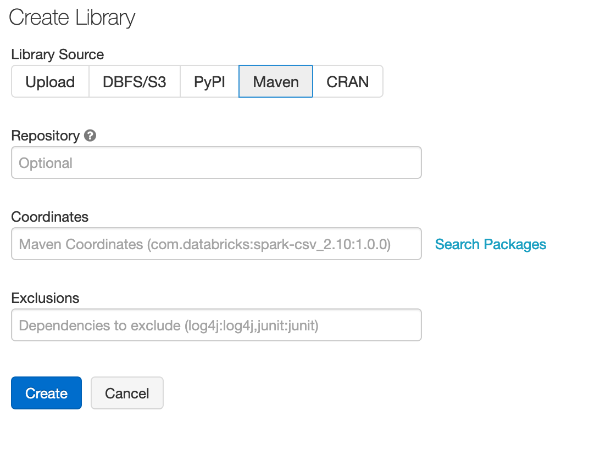
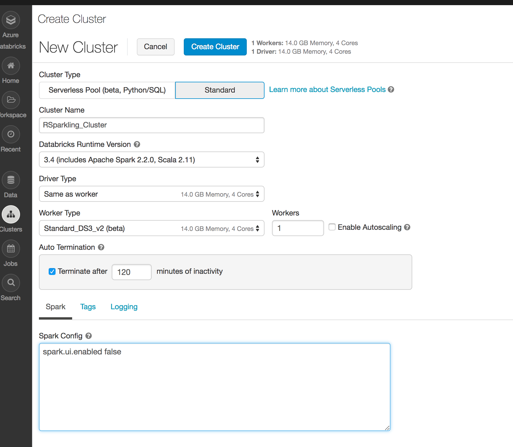
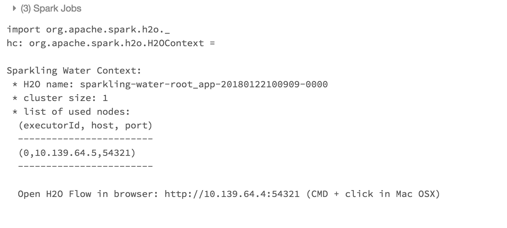

Running Sparkling Water on Databricks Azure Cluster¶
Sparkling Water, PySparkling and RSparkling can be used on top of Databricks Azure Cluster. This tutorial is the Scala Sparkling Water.
For Pysparkling, please visit Running PySparkling on Databricks Azure Cluster and for RSparkling, please visit Running RSparkling on Databricks Azure Cluster.
To start Sparkling Water H2OContext on Databricks Azure, the steps are:
Login into Microsoft Azure Portal
Create Databricks Azure Environment
In order to connect to Databricks from Azure, please make sure you have created the user inside Azure Active Directory and using that user for the Databricks Login.
Add Sparkling Water dependency
In order to create the Java library in Databricks, go to Libraries, select Maven as the library source and type the following into the coordinates field:
ai.h2o:sparkling-water-package_2.12:3.36.1.4-1-3.1.If you don’t want to train new models and just score with existing H2O-3, SW, Driverless AI MOJO models, you can use a smaller package called
ai.h2o:sparkling-water-scoring-package_2.12:3.36.1.4-1-3.1instead.You can configure each cluster manually and select which libraries should be attached or you can configure the library to be attached to all future clusters. It is advised to restart the cluster in case you attached the library to already running cluster to ensure the clean environment.
Create the cluster
Make sure the assembly JAR is attached to the cluster
For Sparkling Water 3.36.1.4-1-3.1 select Spark 3.1.3
It is advised to always use the latest Sparkling Water and Spark version for the given Spark major version.
Create a Scala notebook and attach it to the created cluster. To start
H2OContext, the init part of the notebook should be:import ai.h2o.sparkling._ val hc = H2OContext.getOrCreate()
And voila, we should have
H2OContextrunningFlow is accessible via the URL printed out after H2OContext is started. Internally we use open port 9009. If you have an environment where a different port is open on your Azure Databricks cluster, you can configure it via
spark.ext.h2o.client.web.portor corresponding setter onH2OConf.